Time Varying Parameters and Stochastic Volatility in bvartools
Franz X. Mohr
Source:vignettes/tvp-sv-var.Rmd
tvp-sv-var.RmdIntroduction
A standard VAR makes two constancy assumptions that a long sample rarely supports. The coefficients are the same in every period, so the dynamics of the 1970s are estimated jointly with those of the 2000s and the result describes neither. And the error covariance matrix is the same in every period, so a sample that contains both a turbulent decade and a quiet one attributes the average of the two to each – which overstates the uncertainty of the quiet period and understates the uncertainty of the turbulent one.
Dropping the first assumption gives a time varying parameter (TVP)
model, dropping the second a stochastic volatility (SV) model.
bvartools treats them as two independent switches,
tvp and error, so a model can have either or
both. This vignette estimates a model with both, and adds Bayesian
variable selection on top of it, since a model with one coefficient per
regressor and period is exactly the kind of model that benefits from
being told which regressors it does not need.
The estimated model is
where the coefficients follow a random walk
and the error covariance matrix is decomposed as
with
lower triangular with ones on its diagonal. The log-volatilities are
random walks, and in a TVP model the free elements of
are random walks as well, so the correlations between the errors move
too. In a model with constant coefficients and
error = "sv+covar" only the volatilities move and
is estimated once.
The state equations are what a TVP-SV model estimates in place of the constant parameters of a standard VAR, and their variances – for the coefficients, for the log-volatilities – decide how much movement the data are allowed to produce. They are the priors that matter most here, and they are discussed below.
Data
Data set at_macrodata contains quarterly macroeconomic
series of Austria. The model of this vignette uses the growth rate of
real GDP (dy), inflation (Dp) and the
short-term interest rate (r), all in percent per quarter,
from 1979Q3 to 2019Q4. Four decades of Austrian data are a sample that
no constant parameter model describes well: they contain the
disinflation of the early 1980s, the years in which the schilling was
pegged to the Deutsche Mark and the short-term rate followed the
Bundesbank, the start of the monetary union in 1999, the financial
crisis, and a decade of interest rates close to or below zero. The
pandemic quarters are left out. Output growth moved by ten percent
within a quarter in 2020, which is a break of a different kind than the
gradual drift these models are built for. The last section but one
returns to them with a model built for that kind of break.
library(bvartools)
data("at_macrodata")
at <- at_macrodata[["domestic"]]
data <- ts.intersect(dy = diff(at[, "y"]), Dp = at[, "Dp"], r = at[, "r"]) * 100
data <- window(data, end = c(2019, 4))
plot(data, main = "Austrian macroeconomic data")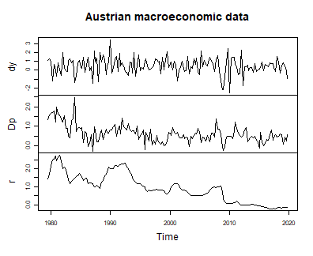
plot of chunk data
Model set-up
Argument tvp = TRUE makes the coefficients time varying
and error = "sv+covar" makes the error covariance matrix
time varying. The posterior sampler follows from the two, which can be
checked on the resulting object.
model <- create_bvarmodel(data, p = 2, deterministic = "const",
tvp = TRUE, error = "sv+covar", varsel = "bvs",
iterations = 3000, burnin = 1000)
model[["model"]][["algorithm"]]
#> [1] "VarTvpStochvol"error = "sv" would estimate the volatilities without the
covariances, which sets the off-diagonal elements of
to zero. "sv+covar" is the specification that corresponds
to the model above.
Priors
The prior of a TVP-SV model is a prior on two state equations beside the usual prior on the level of the coefficients.
model <- add_priors(model,
coef = list(v_i = 1, v_i_det = 1 / 10,
shape = 3, rate = 0.0001, rate_det = 0.01),
sigma = list(shape = 3, rate = 0.01,
mu = 0, v_i = 0.01,
state_variance = 0.05, offset = 1e-8),
varsel = list(inprior = 0.5, exclude_det = TRUE))In argument coef, v_i and
v_i_det are the prior precisions of the initial state of
the coefficients, as they are the prior precisions of the coefficients
themselves in a constant parameter model. shape and
rate are the parameters of the inverse gamma prior of the
elements of
,
the variances of the state equation of the coefficients. A small
rate relative to the scale of the data pulls those
variances towards zero and the coefficient paths towards straight lines:
the prior is that a coefficient is constant, and the data have to argue
it out of that. rate_det does the same for coefficients of
deterministic terms, with a larger value, since an intercept that is
allowed to drift is often what carries a change in the mean of a
series.
Since the scale of the data is what makes a rate small
or large, it is worth checking rather than copying. A TVP model has one
coefficient per regressor and period, so a model with many regressors
and a short sample can have more coefficients than observations, and a
rate loose enough for the path to exploit that produces a
model which fits every observation exactly, has no residuals left, and
reports a flat volatility. The diagnostic is to compare the residuals
under the posterior mean of the coefficient path with the residuals of a
least squares fit of the same regressors: the first should be somewhat
smaller than the second, not very much smaller.
residual_sd <- function(object) {
k <- object[["model"]][["k"]]
m <- ncol(object[["data"]][["train"]][["z"]])
tt <- nrow(object[["data"]][["train"]][["y"]])
y <- matrix(t(object[["data"]][["train"]][["y"]]))
z <- object[["data"]][["train"]][["z"]]
a <- colMeans(object[["posterior"]][["a"]][["coeffs"]])
fitted <- rep(NA_real_, tt * k)
for (period in 1:tt) {
rows <- (period - 1) * k + 1:k
fitted[rows] <- z[rows, ] %*% a[(period - 1) * m + 1:m]
}
ols <- solve(crossprod(z)) %*% crossprod(z, y)
result <- rbind(apply(matrix(y - fitted, k), 1, stats::sd),
apply(matrix(y - z %*% ols, k), 1, stats::sd))
dimnames(result) <- list(c("tvp", "ls"), object[["model"]][["endogen"]])
result
}The function is used further below, once the model has been estimated.
In argument sigma, shape and
rate now refer to the state equation of the
log-volatilities rather than to an error variance: they are the prior of
and control how quickly a volatility is allowed to move. mu
and v_i are the prior mean and precision of the initial
log-volatility, and state_variance is the value
is initialised at. offset is added to the squared errors
before their logarithm is taken, which keeps a residual that happens to
be near zero from producing an infinite log-volatility.
sigma$rate deserves a second look, because it decides
how much of a stochastic volatility model one actually gets. With
shape = 3 the prior mean of
is rate / 2, and since the log-volatility is a random walk,
its standard deviation over a sample of
periods is about
.
At rate = 0.0001 that is about a tenth of a log point over
this sample, so the prior allows the volatilities to move by a few
percent and the specification is a constant variance model in all but
name. At rate = 0.01, used here, it allows them to move by
a factor of about two. An equation whose data demand more than the prior
allows will move anyway, so the effect of a tight prior is selective
rather than uniform, which is exactly what makes it easy to miss.
Argument varsel specifies Bayesian variable selection
after Korobilis (2013). One inclusion parameter is drawn per
coefficient, not per coefficient and period, so a regressor is either in
the model over the whole sample or out of it over the whole sample.
exclude_det = TRUE keeps the deterministic terms out of the
selection.
A note on that last combination: in a model with
constant coefficients and an error covariance block,
one selection scheme applies to the coefficients and the covariances
together, and add_priors refuses to restrict the selection
to the coefficients alone. A time varying model can treat the two blocks
separately, which is why exclude_det = TRUE is accepted
here without also specifying varsel$covar.
Initial values and posterior draws
Initial values of the state variances and volatilities are drawn from their priors, so the seed is set before them.
set.seed(1234567)
model <- add_initial_values(model)
model <- add_posterior_coefficients(model)The diagnostic of the previous section says that this specification has not absorbed its own residuals:
round(residual_sd(model), 4)
#> dy Dp r
#> tvp 0.8884 0.2764 0.0749
#> ls 0.9023 0.3244 0.1051Evaluation
Summary statistics for a period
A TVP model has one set of coefficients per period, so a summary
table has to be the summary of a period. summary uses the
last one by default and reports which period that is.
summary(model)
#>
#> Bayesian TVP-SV-VAR model with p = 2
#>
#> Variable selection algorithm: Bayesian variable selection (Korobilis, 2013)
#>
#> Endogenous variables: dy, Dp, r
#>
#> Period: 160
#>
#> Variable: dy
#>
#> Mean SD Naive SD Time-series SD 2.5% 50% 97.5%
#> dy.l1 -0.06766 0.10397 0.001898 0.007392 -0.31941 0.0000 0.0000
#> Dp.l1 -0.01163 0.09853 0.001799 0.003011 -0.32673 0.0000 0.1716
#> r.l1 -0.05377 0.20138 0.003677 0.010363 -0.64844 0.0000 0.1993
#> dy.l2 -0.02060 0.06126 0.001118 0.002846 -0.22246 0.0000 0.0000
#> Dp.l2 -0.27608 0.26672 0.004870 0.017092 -0.80202 -0.2676 0.0000
#> r.l2 -0.01065 0.18431 0.003365 0.006638 -0.42965 0.0000 0.4391
#> const 0.49238 0.25084 0.004580 0.011574 0.01011 0.4899 0.9887
#> Incl. prob.
#> dy.l1 0.4020
#> Dp.l1 0.1873
#> r.l1 0.2590
#> dy.l2 0.1740
#> Dp.l2 0.6370
#> r.l2 0.2523
#> const 1.0000 *
#>
#> Variable: Dp
#>
#> Mean SD Naive SD Time-series SD 2.5% 50% 97.5%
#> dy.l1 0.0018246 0.01370 0.0002501 0.0005756 0.0000000 0.00000 0.03973
#> Dp.l1 0.0253535 0.07122 0.0013004 0.0068517 0.0000000 0.00000 0.26405
#> r.l1 0.3613669 0.33059 0.0060358 0.0706068 0.0000000 0.30896 1.03824
#> dy.l2 0.0434755 0.05437 0.0009926 0.0060227 -0.0009244 0.01091 0.16552
#> Dp.l2 0.0007498 0.02987 0.0005453 0.0014379 -0.0155039 0.00000 0.04258
#> r.l2 -0.1772978 0.30546 0.0055770 0.0621686 -0.8530441 0.00000 0.30428
#> const 0.4279407 0.12716 0.0023217 0.0044571 0.1720832 0.43010 0.67091
#> Incl. prob.
#> dy.l1 0.05067
#> Dp.l1 0.18467
#> r.l1 0.71933
#> dy.l2 0.53933
#> Dp.l2 0.06300
#> r.l2 0.62500
#> const 1.00000 *
#>
#> Variable: r
#>
#> Mean SD Naive SD Time-series SD 2.5% 50% 97.5%
#> dy.l1 0.00000 0.00000 0.0000000 0.000000 0.000000 0.000000 0.000000
#> Dp.l1 0.05221 0.04012 0.0007326 0.002211 -0.031900 0.053187 0.127670
#> r.l1 0.76548 0.13586 0.0024804 0.032357 0.540660 0.744148 1.057038
#> dy.l2 0.00000 0.00000 0.0000000 0.000000 0.000000 0.000000 0.000000
#> Dp.l2 0.02693 0.03537 0.0006458 0.013153 -0.005023 0.001007 0.107132
#> r.l2 -0.06398 0.10430 0.0019042 0.041424 -0.325766 0.000000 0.000000
#> const -0.07200 0.04284 0.0007821 0.004922 -0.158285 -0.071092 0.008488
#> Incl. prob.
#> dy.l1 0.000
#> Dp.l1 1.000
#> r.l1 1.000 *
#> dy.l2 0.000
#> Dp.l2 0.534
#> r.l2 0.356
#> const 1.000
#>
#> Variance-covariance matrix:
#>
#> Mean SD Naive SD Time-series SD 2.5% 50%
#> dy_dy 0.5549257 0.2695638 4.922e-03 1.168e-02 0.2169781 0.5056563
#> dy_Dp 0.0161935 0.0330813 6.040e-04 7.819e-04 -0.0392779 0.0137450
#> dy_r 0.0037394 0.0118259 2.159e-04 5.085e-04 -0.0183332 0.0028928
#> Dp_Dp 0.0557003 0.0225879 4.124e-04 1.021e-03 0.0234844 0.0520005
#> Dp_r 0.0014305 0.0025211 4.603e-05 1.307e-04 -0.0033831 0.0012772
#> r_r 0.0008603 0.0006741 1.231e-05 5.141e-05 0.0001285 0.0006784
#> 97.5%
#> dy_dy 1.185443 *
#> dy_Dp 0.083111
#> dy_r 0.029777
#> Dp_Dp 0.110561 *
#> Dp_r 0.006935
#> r_r 0.002690 *Argument period asks for another one. It is an index
into the estimation sample, which the following helper turns into a
date.
period_of <- function(object, year, quarter) {
which(stats::time(object[["data"]][["train"]][["y"]]) == year + (quarter - 1) / 4)
}
summary(model, period = period_of(model, 1985, 1))
#>
#> Bayesian TVP-SV-VAR model with p = 2
#>
#> Variable selection algorithm: Bayesian variable selection (Korobilis, 2013)
#>
#> Endogenous variables: dy, Dp, r
#>
#> Period: 21
#>
#> Variable: dy
#>
#> Mean SD Naive SD Time-series SD 2.5% 50% 97.5%
#> dy.l1 -0.072135 0.10537 0.001924 0.006704 -0.3149 0.0000 0.0000
#> Dp.l1 -0.013526 0.09882 0.001804 0.003192 -0.3125 0.0000 0.1545
#> r.l1 -0.052359 0.19701 0.003597 0.010218 -0.6244 0.0000 0.1761
#> dy.l2 -0.021632 0.06144 0.001122 0.002797 -0.2317 0.0000 0.0000
#> Dp.l2 -0.272574 0.26082 0.004762 0.016774 -0.7809 -0.2767 0.0000
#> r.l2 -0.008908 0.18480 0.003374 0.006568 -0.4252 0.0000 0.4470
#> const 0.909117 0.34338 0.006269 0.014311 0.2814 0.9030 1.6225
#> Incl. prob.
#> dy.l1 0.4020
#> Dp.l1 0.1873
#> r.l1 0.2590
#> dy.l2 0.1740
#> Dp.l2 0.6370
#> r.l2 0.2523
#> const 1.0000 *
#>
#> Variable: Dp
#>
#> Mean SD Naive SD Time-series SD 2.5% 50% 97.5%
#> dy.l1 0.001223 0.01065 0.0001945 0.0005725 0.000000 0.000000 0.02316
#> Dp.l1 0.023962 0.06726 0.0012281 0.0062673 0.000000 0.000000 0.24209
#> r.l1 0.374503 0.33213 0.0060638 0.0756091 0.000000 0.332685 1.05023
#> dy.l2 0.037568 0.04736 0.0008647 0.0051526 -0.006451 0.005647 0.13954
#> Dp.l2 0.002245 0.03052 0.0005571 0.0021658 0.000000 0.000000 0.05855
#> r.l2 -0.157379 0.29684 0.0054196 0.0575494 -0.797567 0.000000 0.32147
#> const 0.449820 0.24391 0.0044531 0.0233717 0.003378 0.438075 0.93219
#> Incl. prob.
#> dy.l1 0.05067
#> Dp.l1 0.18467
#> r.l1 0.71933
#> dy.l2 0.53933
#> Dp.l2 0.06300
#> r.l2 0.62500
#> const 1.00000 *
#>
#> Variable: r
#>
#> Mean SD Naive SD Time-series SD 2.5% 50% 97.5%
#> dy.l1 0.00000 0.00000 0.0000000 0.000000 0.00000 0.00000 0.0000
#> Dp.l1 0.11862 0.04338 0.0007920 0.004322 0.03783 0.11712 0.2042
#> r.l1 0.78114 0.13041 0.0023810 0.032498 0.58651 0.75349 1.0727
#> dy.l2 0.00000 0.00000 0.0000000 0.000000 0.00000 0.00000 0.0000
#> Dp.l2 0.03698 0.04427 0.0008083 0.021673 0.00000 0.01002 0.1322
#> r.l2 -0.05525 0.09173 0.0016748 0.035880 -0.28198 0.00000 0.0000
#> const 0.25575 0.11488 0.0020973 0.003992 0.03300 0.25227 0.4882
#> Incl. prob.
#> dy.l1 0.000
#> Dp.l1 1.000 *
#> r.l1 1.000 *
#> dy.l2 0.000
#> Dp.l2 0.534
#> r.l2 0.356
#> const 1.000 *
#>
#> Variance-covariance matrix:
#>
#> Mean SD Naive SD Time-series SD 2.5% 50% 97.5%
#> dy_dy 0.912997 0.295187 0.0053894 0.0133270 0.467218 0.874570 1.61600 *
#> dy_Dp -0.006822 0.044219 0.0008073 0.0012000 -0.100925 -0.004508 0.07236
#> dy_r -0.010831 0.022184 0.0004050 0.0005744 -0.058893 -0.010021 0.03178
#> Dp_Dp 0.162272 0.047818 0.0008730 0.0042482 0.092350 0.153837 0.28154 *
#> Dp_r 0.015010 0.008391 0.0001532 0.0003682 0.001909 0.014139 0.03386 *
#> r_r 0.020846 0.009228 0.0001685 0.0005592 0.009098 0.018899 0.04361 *Comparing the two tables compares two models: the same specification, fitted to the same sample, describing two different points in it.
The inclusion probabilities are the exception. They do not carry a period, because variable selection decides on a regressor for the whole sample, and the column is therefore identical in both tables.
Coefficient paths
plot draws one figure per block of coefficients – the
lags of the endogenous variables, the deterministic terms, and the
covariance matrix of the error term – with one panel per coefficient
showing the median and the bounds of a credible band over time. A block
with more regressors than max_cols is split over several
figures, which is what keeps the panels of a model with many regressors
large enough to read.
plot(model)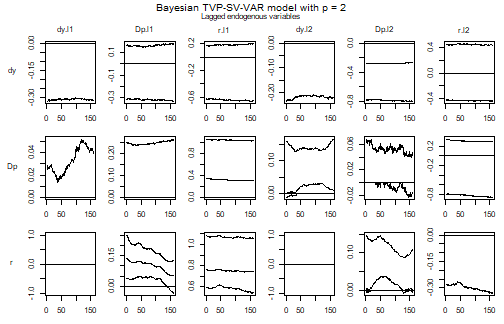
plot of chunk paths
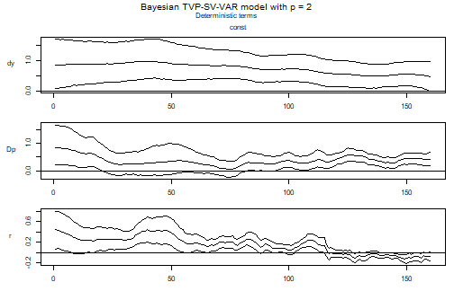
plot of chunk paths
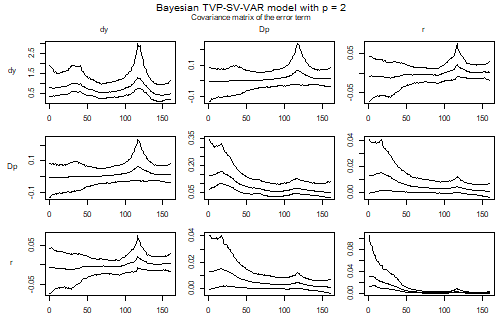
plot of chunk paths
A panel that sits on a flat line at zero is a coefficient that variable selection has switched off. The remaining panels are the reason for estimating the model: a coefficient that drifts across the sample is one that a constant parameter VAR would have averaged.
A single path is easier to read on its own. The draws of the
coefficients sit in posterior$a$coeffs, with the
coefficients of one period next to each other and the periods stacked
from left to right, so the path of one coefficient is every
-th
column.
coefficient_path <- function(object, equation, regressor, ci = 0.9) {
k <- object[["model"]][["k"]]
m <- ncol(object[["data"]][["train"]][["z"]])
tt <- nrow(object[["data"]][["train"]][["y"]])
# Coefficients are stored as vec(A), so the position of a regressor in an
# equation is the number of preceding regressors times the number of
# equations, plus the position of the equation.
i <- (which(dimnames(object[["data"]][["train"]][["x"]])[[2]] == regressor) - 1) * k +
which(object[["model"]][["endogen"]] == equation)
draws <- object[["posterior"]][["a"]][["coeffs"]][, m * 0:(tt - 1) + i]
bands <- t(apply(draws, 2, stats::quantile,
probs = c((1 - ci) / 2, .5, 1 - (1 - ci) / 2)))
stats::ts(bands, start = stats::start(object[["data"]][["train"]][["y"]]),
frequency = stats::frequency(object[["data"]][["train"]][["y"]]))
}
path <- coefficient_path(model, equation = "r", regressor = "r.l1")
stats::ts.plot(path, lty = c(2, 1, 2),
main = "Short-term rate ~ its own first lag",
ylab = "Coefficient")
abline(h = 0, lty = "dotted")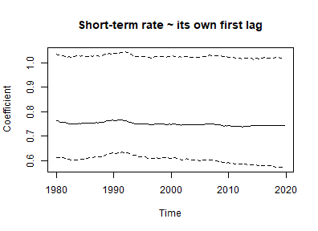
plot of chunk one-path
This path is practically flat. With coef$rate = 0.0001
the prior is that the coefficients are constant, and for this
coefficient the data do not argue otherwise.
Volatility paths
The draws of the error covariance matrix are stored as precisions, one matrix per period, so the standard deviations are the square roots of the diagonal of its inverse.
volatility <- function(object) {
k <- object[["model"]][["k"]]
kk <- k * k
tt <- nrow(object[["data"]][["train"]][["y"]])
draws <- object[["posterior"]][["u_sigma_inv"]][["coeffs"]]
result <- matrix(NA_real_, tt, k)
for (i in 1:tt) {
result[i, ] <- rowMeans(apply(draws[, (i - 1) * kk + 1:kk], 1,
function(x) {sqrt(diag(solve(matrix(x, k))))}))
}
stats::ts(result, start = stats::start(object[["data"]][["train"]][["y"]]),
frequency = stats::frequency(object[["data"]][["train"]][["y"]]),
names = object[["model"]][["endogen"]])
}
plot(volatility(model),
main = "Posterior mean of the residual standard deviations")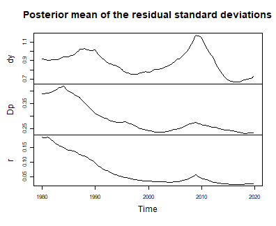
plot of chunk volatility
This is the part of the model that is hardest to do without. The volatilities of the inflation and interest rate residuals are highest at the start of the sample and fall to about a half and a tenth of that level, respectively, the latter almost vanishing once the short-term rate approached its lower bound. The volatility of output growth has no such trend: it is highest during the financial crisis in 2009 and lowest in the years after it. A constant covariance matrix would spread each of these episodes over the whole sample.
Impulse responses for a period
irf and fevd take a period in
the same way summary does, which is what makes an impulse
response of a TVP model a well defined object: it is the response
implied by the coefficients and the covariance matrix of one period.
early <- irf(model, impulse = "r", response = "Dp", n_ahead = 20,
period = period_of(model, 1985, 1))
late <- irf(model, impulse = "r", response = "Dp", n_ahead = 20,
period = period_of(model, 2010, 1))
plot(early, main = "Response of inflation to the short-term rate, 1985Q1")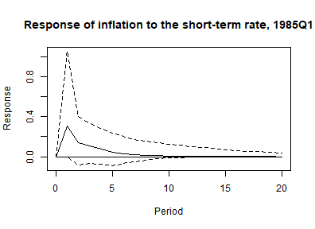
plot of chunk irf
plot(late, main = "Response of inflation to the short-term rate, 2010Q1")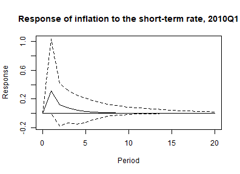
plot of chunk irf
In both periods inflation rises after an unexpected increase of the
short-term rate, and the response dies out slightly faster in 2010. By
default irf computes forecast error impulse responses,
whose shock is one unit of the forecast error of the impulse variable,
so the two responses differ only because the coefficients of the two
periods differ. How large a typical shock was in each period is what the
volatility figure above shows, and with type = "oir" it
would enter the responses as well. A forecast error impulse response is
not identified, so its positive sign is no statement about the effect of
a monetary tightening. The vignette on sign restrictions takes up that
question.
Forecasts
Forecasts start from the state of the last period of
the estimation sample, and add_posterior_forecasts
simulates each draw forward from there: the coefficients, the covariance
block and the log-volatilities take a step of their random walks every
quarter, so the forecast is a draw from the posterior predictive
distribution of the estimated model. The bands reflect both the
uncertainty about
and
and the drift the model allows after the end of the sample.
model <- add_forecast_input(model, n_ahead = 8)
model <- add_posterior_forecasts(model)
plot(predict(model, n_ahead = 8))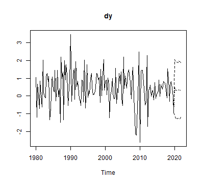
plot of chunk forecast
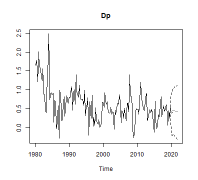
plot of chunk forecast
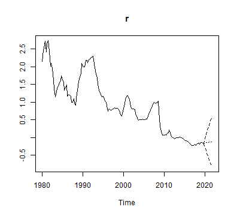
plot of chunk forecast
forecast_states = "hold" carries the draws of
and
forward over the whole horizon instead, which is the forecast
conditional on no further drift. The width of the 90% intervals eight
quarters ahead shows what the drift adds:
held <- add_posterior_forecasts(model, forecast_states = "hold")
interval_width <- function(object) {
fcst <- predict(object, n_ahead = 8)[["fcst"]]
apply(fcst[8, , ], 1, function(x) diff(stats::quantile(x, c(0.05, 0.95))))
}
round(rbind(simulated = interval_width(model), held = interval_width(held)), 2)
#> dy Dp r
#> simulated 2.56 1.17 1.14
#> held 2.49 0.88 0.43Eight quarters ahead, carrying the drift forward leaves the interval of output growth almost unchanged, widens that of inflation by about a third and makes that of the short-term rate two and a half times as wide. A forecast that holds the coefficients at the end of the sample understates the uncertainty this model implies.
The pandemic quarters: a volatility break
The sample above ends in 2019 because the quarters after it are not the kind of change a random walk describes. Austrian output fell by ten percent in the second quarter of 2020 and rose by as much in the third. A stochastic volatility model has to treat a jump like that as a sequence of draws from its state equation, and either the prior lets the volatility move that far – in which case it moves that far all the time – or it does not, and the jump ends up in the coefficients. A VAR with a constant covariance matrix does worse: it spreads the two quarters over the whole sample.
What is unusual about the pandemic is that its timing is known. Lenza and Primiceri (2022) use that: from a known period on, the error covariance is instead of , with a free scale in each of the first few periods and, after them, an excess over one that decays at a rate ,
where
is the last period with a scale of its own. The date says when the break
happened; how large it was and how quickly it faded are estimated. The
scale is common to all equations, so the coefficients and
keep their conjugate priors, and the model is a VAR with constant
coefficients and a Wishart prior, error = "wishart", with
one more argument. Argument volatility_break gives the
first period of the break as a date of the data, and
volatility_scales the number of free scales, three by
default. The prior of the scales and of
is element volatility of sigma. Like every
other prior in bvartools it has no default; the values
below are the ones Lenza and Primiceri use, a Pareto prior with shape
one on each scale, which puts no mass below one, and a beta prior with
mode 0.8 and standard deviation 0.2 on
.
The two models below are estimated on the sample up to 2023Q3, the last quarter of the data set, once without and once with a break in 2020Q1.
full <- ts.intersect(dy = diff(at[, "y"]), Dp = at[, "Dp"], r = at[, "r"]) * 100
constant <- create_bvarmodel(full, p = 2, deterministic = "const",
iterations = 5000, burnin = 1000)
constant <- add_priors(constant, coef = list(v_i = 1, v_i_det = 1 / 10),
sigma = list(df = "k", scale = 1))
scaled <- create_bvarmodel(full, p = 2, deterministic = "const",
volatility_break = c(2020, 1),
iterations = 5000, burnin = 1000)
scaled <- add_priors(scaled, coef = list(v_i = 1, v_i_det = 1 / 10),
sigma = list(df = "k", scale = 1,
volatility = list(shape = 1, rho_shape1 = 3.04,
rho_shape2 = 1.51)))
set.seed(1234567)
constant <- add_posterior_coefficients(add_initial_values(constant))
scaled <- add_posterior_coefficients(add_initial_values(scaled))The draws of the break are in
posterior$volatility$coeffs, one column per free scale and
a last one for
.
round(summary(scaled[["posterior"]][["volatility"]][["coeffs"]])[["quantiles"]], 2)
#> 2.5% 25% 50% 75% 97.5%
#> s1 1.26 1.82 2.31 3.08 5.99
#> s2 3.49 5.13 6.57 8.75 17.42
#> s3 2.62 3.69 4.42 5.21 7.85
#> rho 0.61 0.72 0.77 0.82 0.91The path of follows from each draw. The helper below computes it for every period of the sample, one before the break.
scale_path <- function(object, ci = 0.9) {
draws <- as.matrix(object[["posterior"]][["volatility"]][["coeffs"]])
m <- ncol(draws) - 1 # the free scales; the last column is rho
y <- object[["data"]][["train"]][["y"]]
# Periods since the break, which is period 1
j <- seq_len(nrow(y)) - object[["model"]][["volatility_break"]] + 1
path <- apply(draws, 1, function(d) {
s <- rep(1, length(j))
free <- j >= 1 & j <= m
s[free] <- d[j[free]]
decay <- j > m
s[decay] <- 1 + (d[m] - 1) * d[m + 1]^(j[decay] - m)
s
})
bands <- t(apply(path, 1, stats::quantile,
probs = c((1 - ci) / 2, .5, 1 - (1 - ci) / 2)))
stats::ts(bands, start = stats::start(y), frequency = stats::frequency(y))
}
stats::ts.plot(window(scale_path(scaled), start = c(2018, 1)), lty = c(2, 1, 2),
main = "Scale of the shocks", ylab = "s")
abline(h = 1, lty = "dotted")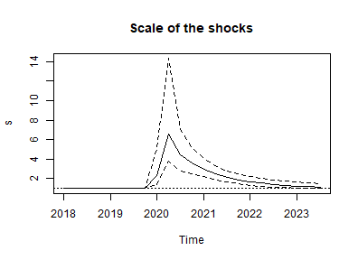
plot of chunk pandemic-path
The shocks of 2020Q2 were between four and fourteen times their usual size, with a median of six and a half, those of 2020Q3 about four times and those of 2020Q1 about two. The excess then fades by about a quarter every quarter, so that by the end of the sample the shocks are some fifteen percent larger than before 2020.
What the break changes is what the rest of the sample is allowed to say. The equation of output growth shows it most clearly:
coefficients_of <- function(object, equation) {
a <- matrix(colMeans(object[["posterior"]][["a"]][["coeffs"]]), object[["model"]][["k"]])
dimnames(a) <- list(object[["model"]][["endogen"]],
dimnames(object[["data"]][["train"]][["x"]])[[2]])
a[equation, ]
}
round(rbind(constant = coefficients_of(constant, "dy"),
"volatility break" = coefficients_of(scaled, "dy")), 2)
#> dy.l1 Dp.l1 r.l1 dy.l2 Dp.l2 r.l2 const
#> constant -0.27 -0.11 0.26 -0.10 -0.30 -0.11 0.76
#> volatility break -0.10 0.08 0.26 -0.06 -0.52 -0.12 0.71Without the break, the fall and the rebound of 2020 are two of the largest observations in the sample, and one following the other is evidence of negative autocorrelation: the coefficient of the first lag of output growth is . With the break, an observation counts with the inverse of , so those two quarters weigh a twentieth of an ordinary one or less, and the coefficient is . The covariance matrix shows the same thing. Its draws are those of , the covariance before the break, and the standard deviation of the output growth residual falls by more than a third once the pandemic quarters no longer have to be absorbed by it:
residual_sd_of <- function(object) {
k <- object[["model"]][["k"]]
sigma <- solve(matrix(colMeans(object[["posterior"]][["u_sigma_inv"]][["coeffs"]]), k))
stats::setNames(sqrt(diag(sigma)), object[["model"]][["endogen"]])
}
round(rbind(constant = residual_sd_of(constant),
"volatility break" = residual_sd_of(scaled)), 2)
#> dy Dp r
#> constant 1.50 0.37 0.13
#> volatility break 0.95 0.34 0.13The log likelihood uses the scale of each period, so the two models can be compared on the same data. The posterior mean of the sum of the pointwise log likelihood is far higher with the break:
loglik_of <- function(object) {
mean(rowSums(add_posterior_loglik(object)[["posterior"]][["loglik"]]))
}
round(c(constant = loglik_of(constant), "volatility break" = loglik_of(scaled)), 1)
#> constant volatility break
#> -256.3 -191.4Forecasts use the scale the decay implies for each period of the horizon, so a forecast made shortly after the break is drawn with larger shocks than one made years later. The width of the 90% intervals one and eight quarters ahead shows how that plays out:
constant <- add_posterior_forecasts(add_forecast_input(constant, n_ahead = 8))
scaled <- add_posterior_forecasts(add_forecast_input(scaled, n_ahead = 8))
width_of <- function(object, h) {
fcst <- predict(object, n_ahead = 8)[["fcst"]]
apply(fcst[h, , ], 1, function(x) diff(stats::quantile(x, c(0.05, 0.95))))
}
round(rbind("constant, h = 1" = width_of(constant, 1),
"volatility break, h = 1" = width_of(scaled, 1),
"constant, h = 8" = width_of(constant, 8),
"volatility break, h = 8" = width_of(scaled, 8)), 2)
#> dy Dp r
#> constant, h = 1 5.21 1.25 0.46
#> volatility break, h = 1 3.88 1.36 0.53
#> constant, h = 8 5.23 1.85 1.80
#> volatility break, h = 8 3.48 1.67 1.95The interval of output growth is narrower with the break, since its usual shocks are no longer measured with the pandemic in them. The intervals of inflation and the short-term rate are slightly wider one quarter ahead. That is the price of a scale common to all equations: the pandemic was mainly a shock to output, but the model scales the shocks of every variable by the same , and since the estimate of barely changes for the other two, what remains of the break at the end of the sample widens their intervals.
Two more things are worth knowing. The break is available only for
constant coefficients and a Wishart prior, the model whose blocks stay
conjugate under the scaling, and create_bvarmodel refuses
it for a TVP or a stochastic volatility model. And the same argument
volatility_break is available for VEC models in
create_bvecmodel.
Student t errors: letting the data find the outliers
The break needs a date. When the periods of large shocks are not known in advance – or when there are more of them than one would care to list – Student t errors are the alternative. Each period gets a scale of its own,
so that the shocks of each period are multivariate
with
degrees of freedom. A period whose shocks are large draws a large
and counts for less in the estimate of the coefficients and of
,
as the pandemic quarters did under the break, but no period is singled
out in advance. Like the break,
is common to all equations, which keeps the Wishart prior conjugate, and
the model is again a VAR with constant coefficients and
error = "wishart", now with
student_t = TRUE.
The degrees of freedom decide how heavy the tails are: a small
allows a few periods with very large shocks, and as
grows the model approaches the normal one. They can be held fixed,
student_t = list(df = 5) in sigma, or drawn
under a gamma prior. The prior below, with shape 2 and rate 0.1, is the
one of Juarez and Steel (2010). Its mean of 20 is close to normal tails,
but it leaves room for very heavy ones if the data ask for them. The
second model combines the break with Student t errors, so that the
pandemic is handled by the break and the
are left to find whatever else there is.
heavy <- create_bvarmodel(full, p = 2, deterministic = "const",
student_t = TRUE,
iterations = 5000, burnin = 1000)
heavy <- add_priors(heavy, coef = list(v_i = 1, v_i_det = 1 / 10),
sigma = list(df = "k", scale = 1,
student_t = list(shape = 2, rate = 0.1)))
both <- create_bvarmodel(full, p = 2, deterministic = "const",
volatility_break = c(2020, 1), student_t = TRUE,
iterations = 5000, burnin = 1000)
both <- add_priors(both, coef = list(v_i = 1, v_i_det = 1 / 10),
sigma = list(df = "k", scale = 1,
volatility = list(shape = 1, rho_shape1 = 3.04,
rho_shape2 = 1.51),
student_t = list(shape = 2, rate = 0.1)))
heavy <- add_posterior_coefficients(add_initial_values(heavy))
both <- add_posterior_coefficients(add_initial_values(both))The draws are in posterior$student_t: df
holds those of
and lambda those of
,
one column per period. The degrees of freedom of the two models:
round(rbind("Student t" = summary(heavy[["posterior"]][["student_t"]][["df"]])[["quantiles"]],
"Student t and break" = summary(both[["posterior"]][["student_t"]][["df"]])[["quantiles"]]), 1)
#> 2.5% 25% 50% 75% 97.5%
#> Student t 2.9 3.7 4.3 4.9 6.7
#> Student t and break 5.5 8.4 10.9 15.6 26.5The square root of is a factor on the standard deviation of the shocks, which makes it comparable to the of the previous section. Its posterior median over the sample:
lambda_path <- function(object) {
y <- object[["data"]][["train"]][["y"]]
lambda <- object[["posterior"]][["student_t"]][["lambda"]]
stats::ts(sqrt(apply(lambda, 2, stats::median)),
start = stats::start(y), frequency = stats::frequency(y))
}
plot(lambda_path(heavy), type = "h", ylab = "Factor",
main = "Square root of the mixing scales")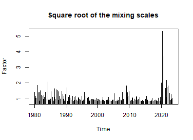
plot of chunk student-t-path
And the periods with the largest mixing scales, in each of the two models:
largest_lambda <- function(object, n = 6) {
y <- object[["data"]][["train"]][["y"]]
quarter <- paste0(floor(stats::time(y) + 1e-6), "Q", stats::cycle(y))
lambda <- apply(object[["posterior"]][["student_t"]][["lambda"]], 2, stats::median)
largest <- order(lambda, decreasing = TRUE)[seq_len(n)]
stats::setNames(round(lambda[largest], 1), quarter[largest])
}
largest_lambda(heavy)
#> 2020Q2 2020Q3 2021Q3 1984Q1 2020Q1 1981Q1
#> 28.0 13.6 4.7 4.2 4.1 3.5
largest_lambda(both)
#> 1984Q1 1981Q1 2009Q1 2008Q4 1990Q1 1986Q2
#> 2.5 2.0 2.0 1.9 1.8 1.7The comparison of the two lists is the point of the exercise. Told nothing about the pandemic, the Student t model finds it: the two largest mixing scales belong to 2020Q2 and 2020Q3, and their square roots of about five and three and a half are not far below the scales the break estimated for those quarters. 2020Q1 and 2021Q3 follow, beside two quarters of the early 1980s. With the break in the model, the pandemic quarters no longer need a large , the degrees of freedom rise to around eleven, and what remains are a few quarters of the early 1980s and the financial crisis of 2008Q4 and 2009Q1, none with a factor much above one and a half.
The log likelihood of a Student t model is the multivariate density, with integrated out, so it can be set beside those of the previous section:
round(c(constant = loglik_of(constant), "volatility break" = loglik_of(scaled),
"Student t" = loglik_of(heavy), "Student t and break" = loglik_of(both)), 1)
#> constant volatility break Student t Student t and break
#> -256.3 -191.4 -193.9 -180.4Each way of handling the pandemic does far better than the model that ignores it, and the two do about equally well on their own, the break slightly better: that is what knowing the date buys. Together they do best, since the break takes care of the pandemic and the Student t errors of the outliers before it, which neither does alone. These are in-sample log likelihoods, which favour the larger model; the vignette on model comparison shows how to penalise them for what the extra parameters add.
A caution on reading the draws of the covariance matrix: under Student t errors they are those of , but the covariance of the shocks is , which with around four is about twice . Comparing the residual standard deviations of a Student t model with those of a normal one has to take that factor into account. Forecasts draw the of each period of the horizon from its prior, so their intervals have the tails the estimated implies. A scenario, a forecast conditional on the future path of some variables, is refused under Student t errors, since the values it pins down carry information about the of the horizon that the forecast would ignore.
Other combinations
tvp and error are independent, so the four
models below are all available, and the middle two are useful
comparisons rather than compromises:
-
tvp = FALSE, error = "wishart"– the standard VAR of the introductory vignette. -
tvp = FALSE, error = "sv+covar"– constant coefficients, moving volatilities. The usual finding for macroeconomic data is that this specification accounts for most of what a full TVP-SV model does, which makes it the model to beat. -
tvp = TRUE, error = "wishart"– moving coefficients, constant volatilities. Worth estimating mainly to see how much of the drift in the coefficients survives once the volatilities are allowed to move as well. -
tvp = TRUE, error = "sv+covar"– the model of this vignette.
Since these are ordinary bvarmodel objects, they can be
compared with the tools of the model comparison vignette. Only the
estimation cost differs noticeably: the coefficient draws of a TVP model
are a path per draw rather than a vector, so both the sampler and the
object it returns grow with the length of the sample.
The same two switches apply to vector error correction models, which are the subject of the companion vignette on TVP-SV-VEC models.
Citing bvartools
If you use bvartools in published work, please cite it.
citation("bvartools") prints the reference, and the package
has the DOI 10.5281/zenodo.22736604,
which always resolves to the latest archived version.
References
Chan, J., Koop, G., Poirier, D. J., & Tobias, J. L. (2019). Bayesian econometric methods (2nd ed.). Cambridge: Cambridge University Press.
Cogley, T., & Sargent, T. J. (2005). Drifts and volatilities: Monetary policies and outcomes in the post WWII US. Review of Economic Dynamics, 8(2), 262-302. https://doi.org/10.1016/j.red.2004.10.009
Durbin, J., & Koopman, S. J. (2002). A simple and efficient simulation smoother for state space time series analysis. Biometrika, 89(3), 603-616. https://doi.org/10.1093/biomet/89.3.603
Kim, S., Shephard, N., & Chib, S. (1998). Stochastic volatility: Likelihood inference and comparison with ARCH models. Review of Economic Studies, 65(3), 361-393. https://doi.org/10.1111/1467-937X.00050
Koop, G., & Korobilis, D. (2010). Bayesian multivariate time series methods for empirical macroeconomics. Foundations and Trends in Econometrics, 3(4), 267-358. https://dx.doi.org/10.1561/0800000013
Juarez, M. A., & Steel, M. F. J. (2010). Model-based clustering of non-Gaussian panel data based on skew-t distributions. Journal of Business & Economic Statistics, 28(1), 52-66. https://doi.org/10.1198/jbes.2009.07145
Korobilis, D. (2013). VAR forecasting using Bayesian variable selection. Journal of Applied Econometrics, 28(2), 204-230. https://doi.org/10.1002/jae.1271
Lenza, M., & Primiceri, G. E. (2022). How to estimate a vector autoregression after March 2020. Journal of Applied Econometrics, 37(4), 688-699. https://doi.org/10.1002/jae.2895
Primiceri, G. E. (2005). Time varying structural vector autoregressions and monetary policy. Review of Economic Studies, 72(3), 821-852. https://doi.org/10.1111/j.1467-937X.2005.00353.x